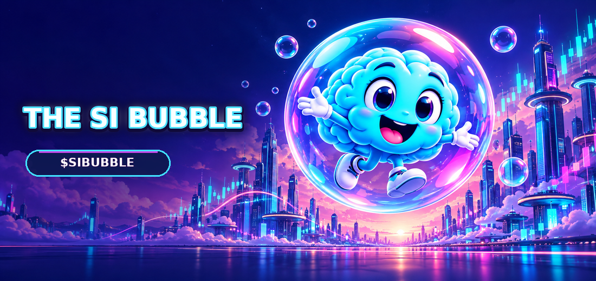
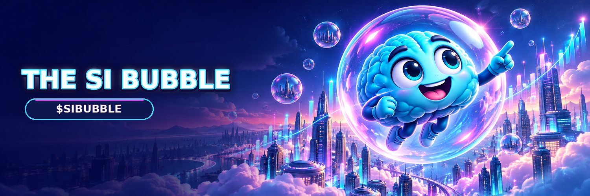

Recognition
A stranger should be able to redraw it from memory. A brain. A bubble. A grin. That is the test.
Mascot world for the AI cycle
A playful super-intelligence.
AI-market hype, turned into a mascot world — a brain in glass, a city of light, and a ticker built to be said out loud.
01 — Thesis
Hype is a material. We shaped it.
The AI cycle taught the market a new vocabulary — models, agents, capex, super-intelligence. Most of it never becomes an image. It stays a paragraph. Paragraphs do not travel. Pictures do.
The SI Bubble is that picture, drawn on purpose. A brain with a point of view. A bubble that treats the joke as architecture. A skyline where the charts are just another kind of light. The short version is the ticker: $SIBUBBLE.
A stranger should be able to redraw it from memory. A brain. A bubble. A grin. That is the test.
Ion cyan, signal magenta, city night. The art runs hot because the cycle is loud. The page around it stays quiet, so the picture can speak.
A name, a ticker, a mark, a banner. Small enough to remember. Finished enough for a timeline, a printer, or a billboard.
02 — The mind
Points the way. Never explains the joke twice.
The SI lives inside the glass. Lit from within, two hands, no interest in looking worried. The expression is the strategy — playful about super-intelligence, exact about the silhouette.

The world
Candlesticks for weather. Bubbles for thoughts. The mind stays in the glass.
03 — Market
By October 2026 the AI story is not short of believers. It is short of images people can repeat without a slide.
Note 01
When every launch says intelligence, language stops being a moat. A paragraph of mechanism is forgotten by the next scroll. A brain inside a bubble is not. The trade remembers what it can redraw.
Note 02
Infrastructure can be right and still be invisible. Avatars, banners, and a ticker someone types for the pleasure of the word — that is how a cycle actually moves. The SI Bubble is built to be carried.
Note 03
The category split. One half built terminals. The other half pasted a mascot on a gradient and called it a brand. The open seat is a character treated with the finish of a product house: original art, a point of view, and the discipline to leave fiction off the page.
When every deck says intelligence, the mark that wins is the one a stranger can redraw from memory.
The instrument
Everything published here is a brand fact. Nothing on this page is guessed.
Chain, contract, and supply belong to a launch announcement. They are not estimated here, and this page will not pretend otherwise.
04 — Marks
Hand this to anyone.

Drawn from the art
Say it once.
$SIBUBBLE